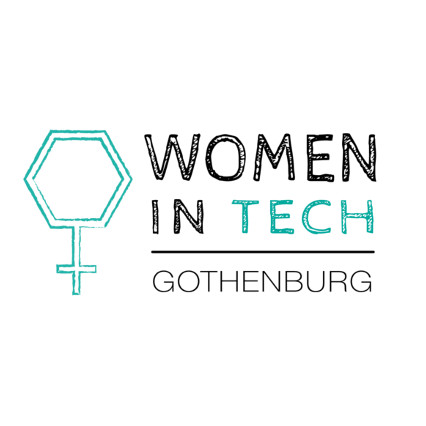
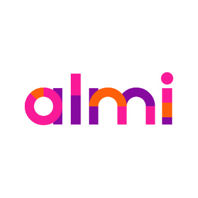
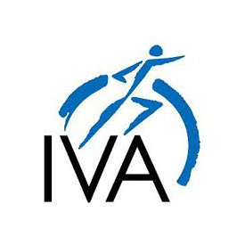

#VisionaryTech – headed towards a new tech industry
Thursday 24/05 - 11:30 - 13:30
Venue: Auktionsverket Kulturarena
Signup has closed!



Post #metoo, it’s time for the tech industry to examine where it’s headed and where it should be headed – how do we get to an inclusive and diverse tech scene? The following panelists will be discussing funding, diversity, labour, next steps, adding their valuable perspective as part of the startup ecosystem. Let us introduce:
- Ninni Carlsson (University of Gothenburg)
- John Rosenbaum (Retriever)
- Emanuel Karlsten
- Linda Rydén (#teknisktfel)
- Johannes Aspeby (Coffee Stain Studios)
- Frida Siwe (Norrsken Foundation)
- Jessica Stark (Styrelseakademien Stockholm)
- Patrik Sjöstrand (Almi Invest)
- Maria Cederholm (Ministry of Enterprise)
- Patrik Andersson (Business Region Göteborg)
- Marie Brattberg (Recorded Future)
- Natali Suonvieri (#NowWhat)
- Terese Lindberg (Product Manager)
- Michaela Berglund (FundedByMe)
Moderators: Emma Mustala (Women in Tech), Daniel Langkilde (IVA West) and Elina Åkerlind (Almi)
The event will be livestreamed.
Lunch will be served between 11:30 and 12:00.
Lunchtickets sold out, standard tickets are still available